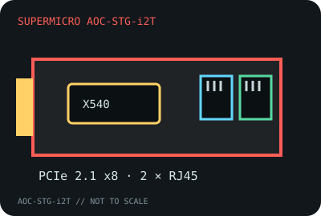

[ MODEL-SPECIFIC NETWORK HARDWARE RECORD ]
Supermicro AOC-STG-i2T Dual-Port 10GbE Adapter
Server-oriented dual-port 10GBASE-T PCIe card with Intel X540 silicon. The OEM board identifier and server compatibility should be checked independently of the controller family.

IDENTIFICATION: Exact Supermicro board model AOC-STG-i2T. The “-P” retail variant and third-party rebadges are separate assembly/SKU identities; check the silkscreen and board label.
Exact SKU, interface and compatibility
| Exact model / SKU / revision | Supermicro AOC-STG-i2T; board-revision suffix is not included in the model name in the cited manual. Record the physical revision/assembly label. |
|---|---|
| Controller | Intel Ethernet Controller X540 dual-port 10GBASE-T generation. |
| Bus, ports and connectors | PCI Express 2.1 x8; two 8P8C/RJ-45 copper ports; low-profile card format and bracket fit depend on server chassis. |
| Per-port link rates | 10GBASE-T and 1000BASE-T auto-negotiation; do not assume 2.5GBASE-T or 5GBASE-T from the 10GbE label. |
| Driver and operating systems | Supermicro’s guide covers Windows, Linux and FreeBSD driver installation; the Linux X540 driver is Intel ixgbe. The guide’s OS list is legacy, so verify the current OS/driver release and Supermicro server qualification rather than extrapolating. |
| Cabling and compatibility caveats | Use Cat 6a for full 10GbE channel length and a 10GBASE-T-capable peer. Host firmware, PCIe lane availability, low-profile clearance, power and airflow must meet the server’s requirements. |
| Variant warning | AOC-STG-i2T and AOC-STG-i2T-P are not silently treated as one SKU. Preserve the complete model suffix, PCB revision and OEM system qualification. |
Server installation notes
Both ports share the card’s PCIe resources. Validate electrical x8 connectivity, chassis airflow and supported firmware before deployment. Link aggregation or failover behavior is software/configuration-dependent and does not multiply a single flow’s line rate.
Supermicro user guide and product references
- Supermicro AOC-STG-i2T User’s Guide (PDF)Manufacturer installation and hardware reference for the exact board model.
- Intel X540 Ethernet Controller brief (PDF)Controller-vendor document hosted by Cisco; it does not replace Supermicro’s board-specific guide.
- Supermicro manuals and downloadsManufacturer document portal for board-specific revisions and related materials.